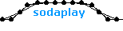
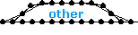
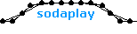
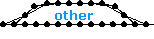

|
 |
site: sodaplaycentral
url: http://www.sodaplaycentral.com
comments: This is an awesome sodaplay fan site administered by a great constructor named Lectvay. There you'll find an assortment of helpful tips, articles written by knowledgeable constructors (even me), and links to some great public model collections of constructors past and present. It's an important resource and becomes more 'central' everyday. |
|
 |
site: sodaconstructor
url: http://sodaplay.com/constructor/player.htm?&getmodel=
comments: This wonderful little applet written by ed from soda is the heart of this hobby. Its minimalist interface belies the beautiful and complex possibilities that await, but beware it's highly addicting. Click the picture to open a blank window, or if you're ready for more complex stuff check out the public motors account. |
|
 |
site: model maker forum
url: http://sodarace.net/forum/forum.jsp?forum=17
comments: Soda erected this forum to highlight their coming feature 'sodarace.' But in the meantime it has become a place for constructors of all ages and skill levels to congregate, learn, and share. If you just need to ask a quick question here's a direct link to the Dedicated Help Thread. |
|
 |
site: sodazoo
url: http://www.sodaplay.com/zoo/index.htm
comments: The zoo is one of the best features of sodaplay. Every night constructors around the world submit models to sodaplay and the next morning the best ones are chosen and displayed in the zoo for everyone to see. Sometimes the updates are sporadic, but we know ed and everyone at soda are a busy crew. |
|
 |
name: soda co.
url: http://soda.co.uk
comments: Who would have thought that soda did anything but sodaplay? Well, there's actually a lot more to this British company. Browse their main site to learn about their philosophy, team members and current projects. And if you squint while looking at the 'members' page you might even be able to make out what ed and the others look like. |


 
